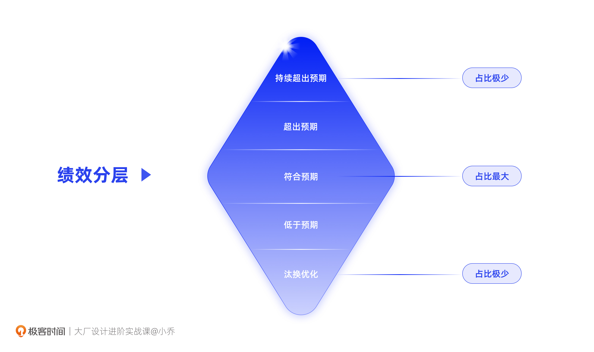
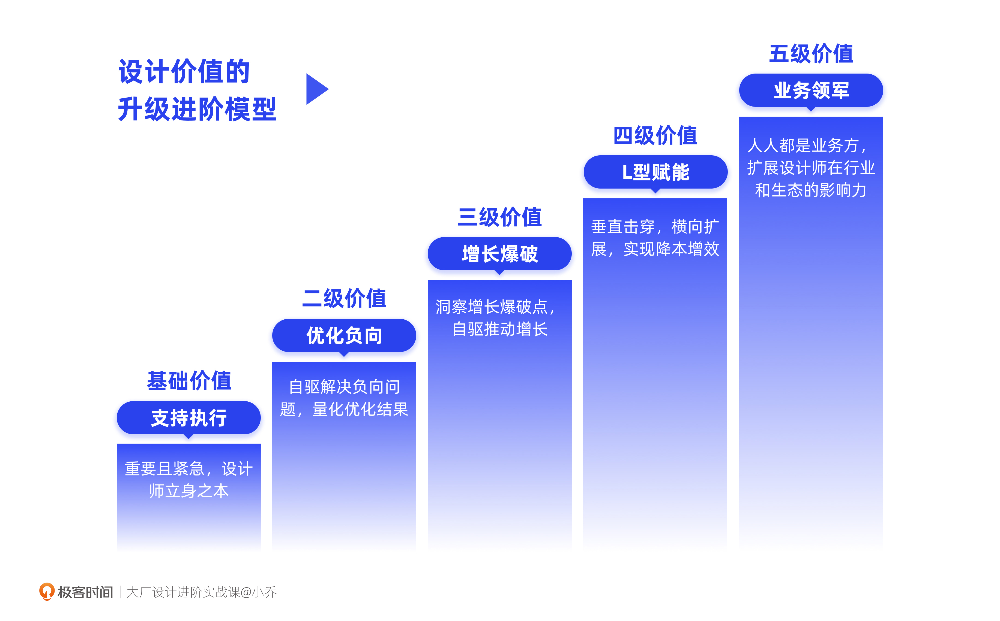
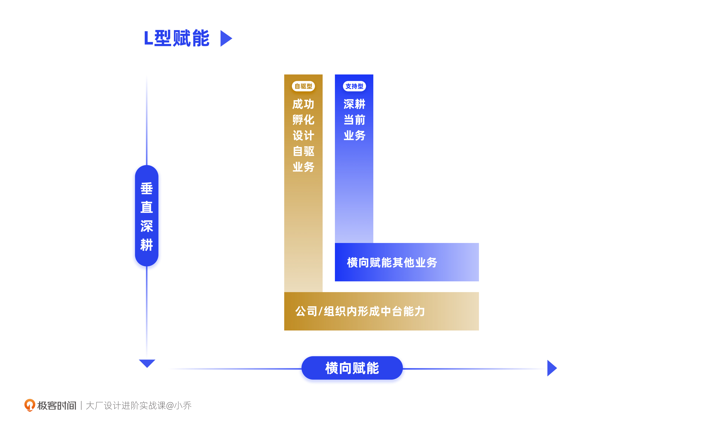
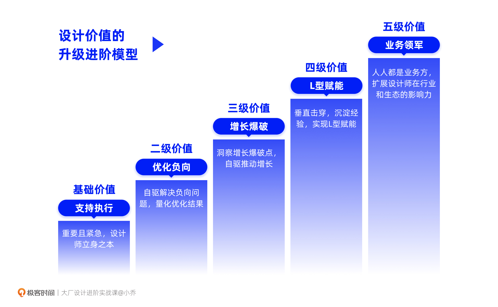

- 00 开篇词 升维思考，是设计师有效成长的第一步.md.html
- 01 业务周期：0-1-10-100-N的发展策略.md.html
- 02 商战模式：如何在商业竞争下突出重围？.md.html
- 03 市场洞察：如何找寻差异化撬动支点？.md.html
- 04 用户洞察：不懂用研的设计师不是好职场人.md.html
- 05 用户画像：是形式主义还是真的有效？.md.html
- 06 用户旅程：挖掘不同用户的核心机会点.md.html
- 07 职场晋升：看懂晋升的“游戏规则”.md.html
- 08 设计价值升级：五层进阶突破成长.md.html
- 09 基础价值 核心三原力：如何将需求转化为设计稿？.md.html
- 10 基础价值 第一性原理：从问题本质解决问题.md.html
- 11 基础价值 设计复盘：只是量化设计结果吗？.md.html
- 12 二级价值 负向网兜：如何全面发现负向问题？.md.html
- 13 二级价值 设计自驱：如何做好项目Owner？.md.html
- 14 二级价值 自驱合作：如何反内卷处理合作关系？.md.html
- 15 三级价值 增长误区：思维惯性陷阱和虚荣数据.md.html
- 16 三级价值 用户增长历程：AARRR是万能的吗？.md.html
- 17 三级价值 产品增长：如何做好产品创新？.md.html
- 18 三级价值 运营增长：如何自驱营销活动和投放？.md.html
- 19 三级价值 品牌增长 抢占心智，赢得人心红利.md.html
- 20 三级价值 增长实操：如何“步步为营”推动落地？.md.html
- 21 四级价值 L型赋能：让T型人才发挥更大价值.md.html
- 22 四级价值 “网状对比”解决共性痛点.md.html
- 23 五级价值 商业画布：设计师可以担任业务方吗？.md.html
- 24 五级价值 共创洞察：如何做好一次完善的workshop？.md.html
- 25 五级价值 领导力觉醒：写给新晋管理者.md.html
- 26 工作选择（上）：2B or 2C设计师？如何规划领域？.md.html
- 27 工作选择（下）：大厂 or 小厂？如何选择赛道？.md.html
- 28 人才地图：认知自我，成为高潜力人才.md.html
- 29 成长历程：如何从设计小白成长为团队负责人？.md.html
- 30 冰山模型：如何成为让面试官欣赏的“面霸”？.md.html
- 31 作品集指导：什么是面试官喜欢的作品集？.md.html
- 用户故事 什么是职场设计师进阶的正确姿势？.md.html
- 结束语 突破自我，成人达己.md.html
- 捐赠
08 设计价值升级：五层进阶突破成长
你好，我是小乔。
上一讲，我们一起了解了晋升的底层逻辑和实现方法。从这节课开始，我们将一起学习设计价值进阶的5级方式，只有不断达到更高的设计价值，才能在团队中更具竞争力和影响力，获得快速晋升的机会。
目前已经步入了用户体验驱动商业的时代。以阿里为代表的几家互联网大厂也都在强调“设计价值”，如果我们想要在行业中拥有竞争力，就需要突破自己的一亩三分地，从设计师的身份出发，输出更高的价值。
但是实际很多同学都不理解什么是设计价值，甚至会觉得自己作为设计师，每天就是接需求画图，和美工也没有差别，质疑设计师这个岗位到底有没有价值，更别提如何评估、量化设计价值，如何提升自己的设计价值了。许多同学会有这样的困惑：
- 工作也有几年了，为什么我那么努力，加班最久，绩效却很平庸呢？
- 我总觉得设计师在公司里没有话语权，怎样才能提升话语权呢？
- 我已经在互联网工作6、7年了，感觉自己成长停滞，每天做着相同的事情，是不是只能靠晋升才能提升设计价值呢？但晋升名额有限，需要排队等资历老的同学先晋升，怎么办？
这些困惑，其实是因为许多同学习惯于被动接受安排，囚困于自己的安全地带，而没有认真思考过如何突破自我、打破限制。我们今天就来一一解答，希望对你有所启发。
为什么要评估设计价值？
设计价值，简而言之，就是我们设计师对业务、团队、公司、行业产生的价值，除了设计稿以外，还包含对业务的推进、对业务的经验沉淀等等。
对于“设计有什么价值”这一质疑，“交互设计之父”Alan Cooper曾经是这么驳斥的，他说：“如果你的上司要求你对你的工作价值进行量化，那你需要明白你的工作确实没有价值。但这是因为在这家公司，跟随这位上司，所以才没有价值。”这句话其实是在说，设计价值应该是一件在公司、组织内从上到下人人皆知的事情，不需要量化或评估就能被感知。
我同意这个观点，公司确实可以感知设计师的重要性，但我们强调设计价值、量化产出成果，不是因为同事们没有感知设计价值的存在，而是对它的感知程度不够明确。设计价值的评估，像是一把衡量贡献程度的尺子，也像是一面认清定位的镜子。
- 对于团队/组织来说，需要横向对比员工贡献，重点发展价值更高的团队，重点培养潜力更高的员工；
- 对于我们个人而言，需要认清自己的定位，明确未来的成长方向。
在组织里，设计价值的直接体现就是员工付出了自己的时间和能力，为公司带来了收益。组织给予员工的回报，比如绩效、晋升、奖金、股权激励等，都是与员工的输出结果相匹配的，需要横向对比不同BU部门、业务、团队之间的价值输出，横向对比团队内每个同学的贡献度。
想要被组织评出好的绩效，就要输出比别人更高的价值，并且可以自证“本年度，我为什么比其他同学的表现更优秀”。
想要晋升，就需要体现超越目前级别的能力，因为晋升答辩不是为了“复盘我做了什么”，而是通过讲我做了什么，证明给评委看“我在未来可以带来更大价值”。

以绩效为例，团队的绩效分级是有一定比例的，每家公司的规定不同，但比例差异不大。有的大厂是严格控制比例的，比如10个人的团队，必须有1个垫底淘汰，也只有1-3个高绩效名额，甚至可能没有；有的大厂虽然不明确要求比例，但会有参考比例，当绩效没有按照参考比例分布时，主管会面临相应压力，要给出不按比例分布的高强理由，不够有说服力就会被驳回。
因此在绩效比例确认的情况下，我们需要做到自己产出的设计价值在团队中有高竞争力，才能突破中等绩效。
除了可以帮助组织进行横向比对，量化设计价值可以帮助我们回顾过往的成长，也是我们在职场中争取话语权的重要手段。对一线设计师来说可以展示自己的输出成果，明确下一步的成长方向；对管理者来说，是为设计团队争取话语权的重要利器。因为我们在职场所做的事情，都是在做价值输出和价值自证。
从初级、高级、资深的一线设计师，到管理层的设计组长、总监，量化设计价值都是非常必要的能力，决定了个人、小组乃至设计部门的回报与发展。
如何提升自己的设计价值
相信现在的你，已经明白评估设计价值的重要性了，那么我们该如何评估、如何一步步提升自己的设计价值呢？很多同学在成长过程中都有这样的困惑，比如不清楚设计价值有哪些、出现了成长停滞问题、遇到了工作中没有话语权的障碍等等，我曾经也是如此。
我刚从咨询行业转行进入互联网行业的时候，各大厂设计职能的成长体系都还在完善，举个例子，当时的能力模型中有对PS熟练程度的要求，却没有对业务的促进贡献。我曾经一度质疑过是否还要继续当设计师，觉得设计师在公司里没什么话语权，自己的能力也得不到充分发挥。后来除了继续做设计执行，我也开始观察那些晋升快的同学是因为什么晋升，我开始不断地找机会挑战、突破自己，学习不同的能力，提升认知体系。
成为管理者后，我团队的设计同学和许多设计师小伙伴也都咨询过我相似的问题，于是我结合自己与好友们的成长路径、培养团队同学晋升的成功经验，以及业界对设计师的竞争力要求等方面，整理出一套“设计价值进阶模型”，帮助许多同学突破了专业瓶颈、实现了晋升。今天也分享给你，希望能够帮助到你。
设计价值进阶模型
我将设计价值整理成五级阶梯，每一级进阶都会面临更大难度和挑战。

需要注意的是，每层升级并不是和公司内的级别一一对应的，比如，无法对应二级价值是P6，三级价值是P7。我们上节课讲过，晋升与否是一个相对论，晋升名额只会给在部门、团队内能力优异的同学。但设计价值的提升，会让我们表现突出，提升晋升速度。
基础价值：设计支持
首先我们需要输出第一级设计价值，这是最重要且紧急的事情。
- 对于年轻的设计师来说，能够高质量完成设计支持，可以确保产出符合主管和合作方的预期；
- 对于资深的设计师来说，就需要积极参与到需求的讨论决策中，能为业务需求带来显著的正向影响，并转化成优秀的设计方案；
- 即便是设计总监的级别，成为了部门里设计团队的一号位，工作第一优先级依然是完成基础价值的输出，只是不一定亲自做执行，而是从个人贡献者转变为指导团队完成设计支持。
简单来说，做好设计支持是万事之本。我们要理解公司招聘设计师的基础目的是：通过购买设计师的单位时间，来完成业务需求的设计支持，这就是职场设计师的基础价值，也是我们最平凡的日常工作。
但是只具备审美能力和软件画图能力，是无法做好设计工作的，那会更像一位美工，而不是一名称职的设计师。
不知道你在工作中是否产生过疑问：我明明做得很好看，为什么业务方不满意？为什么字要更大？为什么要五彩斑斓的黑？再比如，我在重点项目中充分炫技，设计了非常酷炫的界面，为什么我leader不满意？难道不是越酷炫越好吗？
设计执行，虽然只是我们的基础价值，但即便是工作了三五年的设计师，依然存在为了设计而设计的“自嗨”现象，误认为“美的”就是“好的”。比如Instagram代表着国际高端审美水平，如果把它的设计风格复制在拼多多上，恐怕拼多多会失去带来巨大GMV的下沉用户。
所以设计师除了手活技能和审美以外，更需要懂商业和用户，并且具备上下游合作的通用能力。
有了商业和用户洞察后，你甚至会发现，也许业务方的需求存在不合理之处，这时就需要我们回归问题本质，重新提出合理的需求。在之后的课程中，我会带你学习如何在设计支持中做到设计价值的突破，在平凡的日常工作中充分展现设计师的能力，在一亩三分地中开出花来。
二级价值：优化负向
把基础价值发挥到极致后，现在我们至少可以确保自己符合业务方和主管的基本预期，在团队、组织中不会得到不佳绩效。另外由于我们对需求产生了正向影响，业务方往往也会给到正向反馈，认为我们投入度很高。
许多同学可能都处在这个阶段，但经常会抱怨，为什么我每天早上10点上班、晚上10点下班，需求都做得不错，也没收到过业务方的不满和投诉，但绩效却始终平平？
原因很简单，因为你和其他同学比起来，并没有显示出更大的设计价值。大部分的职场设计师基本都可以把需求完成得还不错，想要更好的绩效，我们就需要比“符合预期”做得更多一点，做到“超出预期”。
当完成了日常的设计支持工作，怎样才能“超出预期”，进一步提升自己在团队中、在行业中的竞争力呢？
从这第一次升级开始，我们就开启了设计自驱之路。我将二级价值称为“优化负向”，也就是找出产品的负向体验，发起设计自驱项目进行优化，推动上线后再量化我们的优化结果。
其实很多有自驱意识的同学在日常工作中已经开始产出二级价值了，比如会发动首页改版项目，或将转化效率低的页面进行优化等等。但通常设计师自驱提出的优化需求比较离散，我们如何体系化地发现问题，让这些负向的体验疏而不漏呢？又如何科学地优化需求，验证我们的优化是有效的呢？这些都将在之后的课程中得到解答。
三级价值：增长爆破
当我们达成了二级价值，你已经是个可以自驱发起项目、主动输出价值、勇于独当一面的设计师了。通过优化负向体验，我们可以收获高评价的满意度、NPS等指标，但不一定可以带来显著的业务增长，比如DAU没有因为我们优化了就大涨，投放拉新费用也没有因为优化了就降低。
为什么大盘的数据指标怎么优化都不提升呢？
因为我们的优化工作并不是以增长为目的，而是以优化现有问题为目的的。优化负向体验的能力在于解决现有问题，而实现增长是一件需要创新突破的事情。驱动业务增长，显然会比只是优化问题的含金量更加显著。
从设计价值进阶到第三级价值开始，我们就要放大招了，我称三级价值为“增长爆破”。实现三级价值，就需要我们充分运用上一章关于商业和用户的知识，进行商业分析、用户洞察，撬动几个关键差异点，带来事半功倍的增长效果。
在之后的课程里，我们将以具体案例了解用户增长，通过产品、运营、品牌三个方面推动增长。增长项目往往都是大刀阔斧的改动，涉及到很多人的利益，我们也会一起学习如何将大型增长项目一步步推动落地。
当你成功输出了三级价值，表现通常已经在团队中较为突出，从团队、业务方、合作方那里也收获了一定的话语权。但对应到大厂的级别来看，阿里的P6+和字节的2-2，有部分非常优秀的同学也可以完成三级价值。
四级价值：L型赋能
那我们怎样可以进一步突破成长呢？
从这第四级价值开始，扩大影响力就成为了我们需要达成的目标。影响力有两个理解，一个是对我们个人而言，在组织内有影响力；另一个是我们的项目，在公司、组织甚至行业内形成了正向影响。
但大部分互联网企业并不鼓励个人以公司为背书，对外宣传个人影响力，尤其是级别比较高的同学，公司不希望因为个人言论影响到公司。如果个人有对行业有利的内容要对外分享，需要脱去背书。比如小乔姐姐，也并没有在课程中透露自己的公司和真实姓名，更希望大家聚焦在具体的课程内容上。
因此，我们把重点放在项目的影响力上。那该如何扩大项目的影响力呢？
这就要说到阿里和京东常说的“赋能”。赋能起初是指对人才的赋能，赋能于人，让战斗在一线的人才会做决策、敢于决策，让更多的业务领军人才脱颖而出。
如果形容业务，赋能是指将我们孵化成功并验证有效的项目，复用给同样需要这个能力的业务团队，降低重复孵化的成本。我将这个过程称为“L型赋能”，垂直地做好自己原本的业务，就像L的竖线，再横向影响到其他业务，就像L的横线。

以我们耳熟能详的两个项目举例。电商App中双11的主会场设计，有许多模块容器给业务带来了显著增长，这样的设计方式就可以复用给其他的大促主会场；Ant Design的出现，在满足自身业务之后，开放给市场，供更多阿里内部或外部的B端产品高质高效落地。
不管是负责单一业务的设计，还是同时负责多条业务的设计，我们都可以将项目影响力进行扩展。在之后的课程中，我们会以具体案例一起了解如何将项目成果进行L型赋能，扩大项目能力的影响力，实现四级价值。
五级价值：人人都是业务方
随着综合能力、话语权以及影响力的提升，你是否意识到，身为一个最懂用户、最注重体验的设计师，我们也可以带头为这个行业做点什么。
就像苹果的前首席执行官Steve Jobs、Airbnb的首席执行官Brian Chesky、YouTube的联合创始人以及Paypal的logo设计师Chad Hurley、Behance的联合创始人Matias Corea，他们都是改变行业的存在。
有同学也许会说，姐姐，咱能不以乔布斯举例吗？毕竟时代不同，国家不同，行业对设计师的定位和要求也存在差异啊。
其实在国内互联网公司体制下，设计师成为业务方的案例也比比皆是。我目前的公司，许多核心业务的负责人并不是产品经理或者运营，有技术，有战略，也有许多业务负责人就是设计师。在我之前工作过的公司中，也有大量设计师成为业务负责人，我也有幸负责过业务。
但这并不是一个容易的过程，因为除了设计专业、商业洞察、用户理解，还需要具备组织和商业规划能力。阿里的鲁班就是一个典型的设计师担任业务方的项目，发挥了设计师的专项能力，同时团队需要产品经理、运营、技术的共同支持，最终形成商业化生态，改变了行业。
当你成为了一个优秀的业务方，你同样可以做L型赋能，此时将不再只是组织内部赋能，而是开放给外部，形成生态，甚至可以独立创业。之后我们会一起分析设计师成为业务方的案例，你也有机会成为那个给组织、给行业带来正向改变的人。
今日小结
我们一起探讨了设计价值的重要性，它能帮助组织衡量员工与团队的贡献价值，帮助我们个人清晰自我定位和成长方向。
设计价值提升的五级阶梯，每一级进阶都会面临更大的难度和挑战，因为成长和突破意味着我们打破了自己的舒适圈，这必将伴随着困难和不适，但每一级进阶也同样意味着巨大的成长和收益。

- 支持执行：我们需要成为优秀的需求支持者，成为懂商业、懂用户的称职设计师，输出设计师的基础价值，收获基本绩效；
- 优化负向：需要有发起设计自驱项目的意识与能力，系统地将负面体验按优先级优化，输出二级价值，以超出预期的表现收获中上等绩效；
- 增长爆破：可以进一步找寻撬动业务的差异化突破点，事半功倍地带来业务增长，收获三级价值，收获组织的认可，甚至实现晋升；
- L型赋能：在垂直深耕成功一个项目后，将项目经验与能力赋能给更多的业务，收获四级价值，扩大项目的影响力；
- 业务领军：再突破一些，时刻保持着对商业与用户的敏锐度，我们身为设计师也可以成为业务方，为这个行业带来改变。
随着阶梯的上升，相信你已经逐渐明白，为我们带来突破成长的往往不是基础技能，而是认知层面的质变。接下来的课程中，我们将结合案例，讲明方法，落到实操，一步步实现成长跃进。
互动时刻
回顾你过往的工作，是否在支持业务需求的同时，创造过超出预期的成绩呢？是否自驱发起过项目，在业务增长中做出过主导贡献呢？
欢迎把你的经历和思考在留言区分享出来，与我和其他同学一起探讨。如果你觉得有所收获，也欢迎把文章分享给你的朋友一起学习。
© 2019 - 2023 Liangliang Lee. Powered by gin and hexo-theme-book.